Home Page
- Course title and course image
- Course type (e-learning)
- Number of sessions included in the course
- Course author/assigned trainer
- Assigned date
- Due date (if applicable)
- Course rating
- Course title
- Course type
- Number of sessions
- Course owner/author
- Assigned date
- Current completion percentage
- Continue button
- Course title
- Course type
- Number of session
- Course author/owner
- Completion date
- Course rating
- View button
- Assessment title and image
- Difficulty level (Beginner, Intermediate, Expert)
- Assessment owner/creator
- Number of questions
- Available date
- Duration of the assessment
- Rating information
- Assessment title
- Difficulty level
- Assessment owner
- Number of questions
- Duration
- Assessment date
- Start button
- Workplace Ethics & Conduct Assessment
- Policy Adherence Assessment
- Penetration Testing (Pen Test)
- Assessment title
- Completion status (Passed/Failed)
- Difficulty level
- Completion date
- Time taken
- Number of questions attempted
- Correct answers
- Score percentage
- Passing score
- Feedback and rating
- Training title and image
- Training type (e-learning or Training)
- Trainer/owner name
- Number of sessions
- Training date
- Training start and end time
- Duration
- Rating information
- Training title
- Training type
- Trainer/owner name
- Number of sessions
- Scheduled date and time
- Duration
- Rating information
- Start option to continue the training
- Training title
- Training type
- Number of sessions
- Total training duration
- Trainer/owner name
- Training date
- Rating information
- View button
- Assessment title
- Assessment type
- User who submitted the assessment
- Completion date
- Number of questions
- Assessment level
- Attempted questions
- Assessment title
- Assessment type
- User details
- Completion date
- Number of questions
- Assessment level
- Attempted questions
- Title of the course or assessment
- Type (Course or Assessment)
- Workflow name
- Number of approval levels
- Current approval level
- Current approver(s)
- Enrollment date
- Approval status
- Title of the course or assessment
- Type (Course or Assessment)
- Workflow name
- Number of approval levels
- Current approval level
- Current approver(s)
- Enrollment date
- Approval status
- Course title
- Course level
- Created by
- Assigned employees
- Number of users in progress
- Number of completed users
- Number of users who have not started the course
- Qualification status
The LMS 365 home page provides a centralized and user-friendly learning dashboard that helps users manage their entire learning experience efficiently. It includes key sections such as Course Catalog, My Courses, My Assessments, Completed, My Team, and My Training, enabling learners to easily browse available courses, track assigned and completed training, view assessments, and monitor team progress. With built-in filters, ratings, and course details, users can quickly discover new learning opportunities, manage their learning activities, and stay on top of their training requirements.
Course Catalog:
The Course Catalog provides a centralized view of all available training courses within the LMS. Users can easily browse, search, and filter courses to find relevant learning opportunities based on their interests and roles.
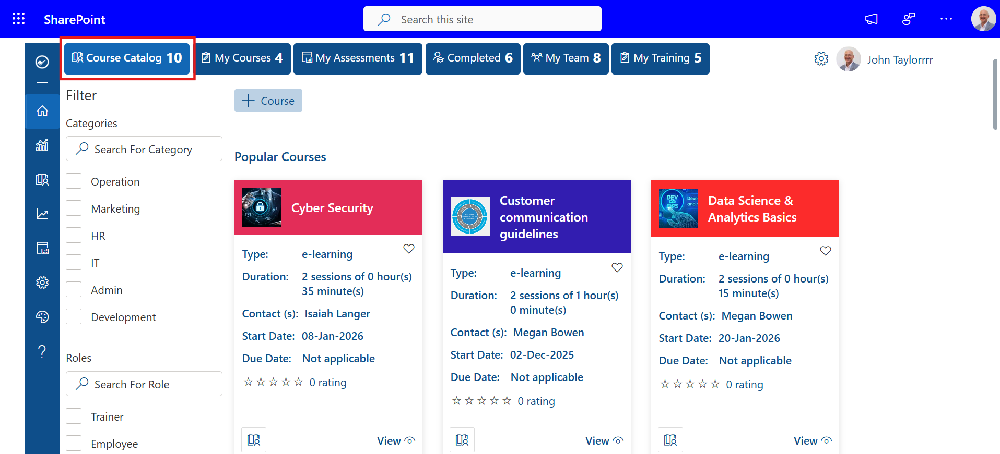
My Courses:
The My Courses section in LMS 365 provides users with a personalized view of their assigned, ongoing, and completed learning courses. Users can track course status and continue their learning journey from this section.
1. Upcoming Courses
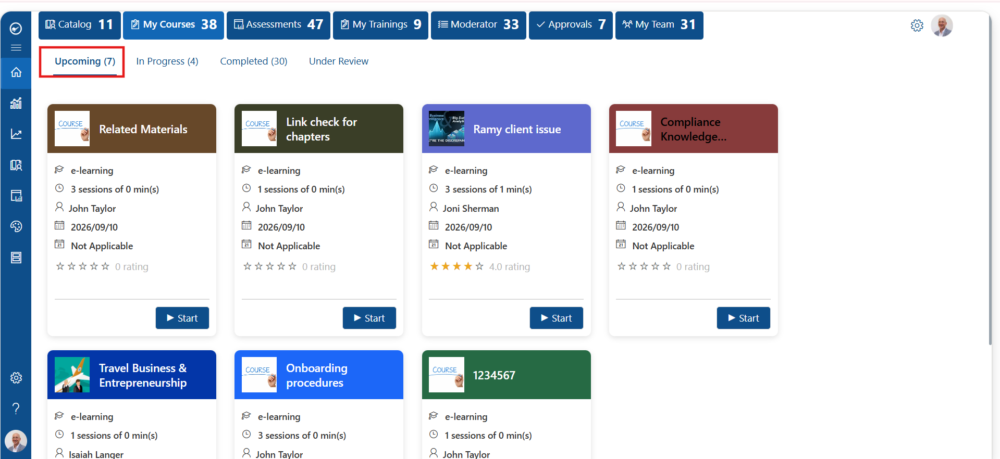
The Upcoming tab displays courses that are assigned to the user but have not been started yet.
Users can view all upcoming learning activities along with key course details:
Each course card provides a Start button, allowing users to begin the course when they are ready.
In this example, the Upcoming section shows 7 courses available for the user to start.
2. In Progress Courses
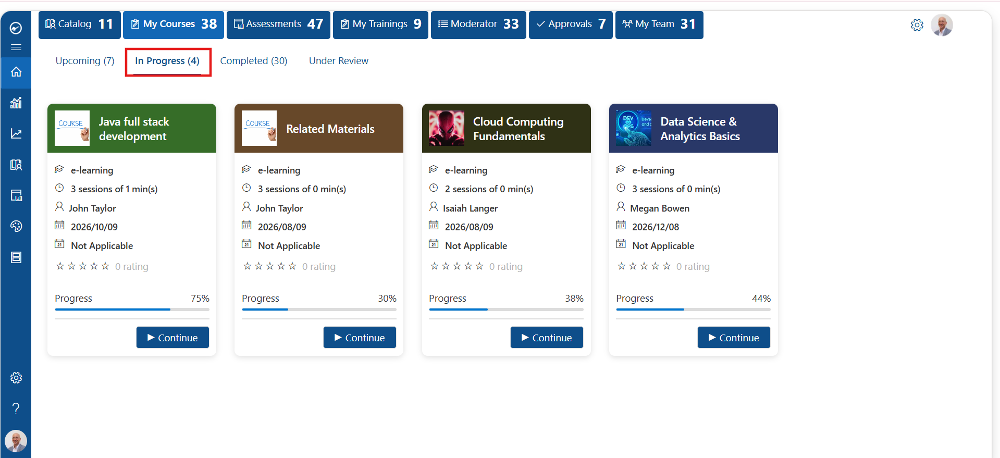
The In Progress tab displays courses that the user has already started but has not completed.
Users can monitor their learning progress through the progress percentage displayed on each course card.
The section provides details such as:
The Continue button allows users to resume the course from where they previously stopped.
In this example, the In Progress section contains 4 courses with different completion levels, including courses showing 75%, 30%, 38%, and 44% progress.
3. Completed Courses
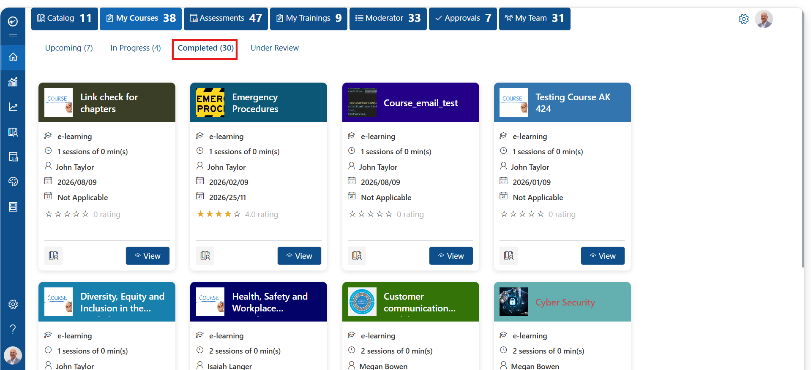
The Completed tab displays all courses that the user has successfully finished
Users can review completed learning materials and access course information after completion.
The completed course cards display:
The View button allows users to open the completed course details for reference.
In this example, the Completed section shows 30 completed courses available for the user.
Summary
The My Courses section helps users manage their complete learning lifecycle in LMS 365. Users can start new courses from Upcoming, continue partially completed courses from In Progress, and review finished courses from Completed.
My Assessments:
The Assessments section in LMS 365 allows users to discover available assessments, attempt assigned assessments, and review completed assessment results. Users can manage their assessment activities from a single location.
1. Assessment Catalog
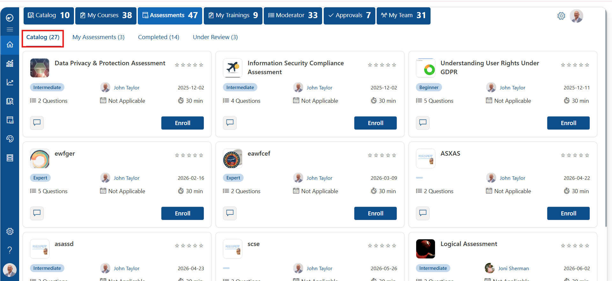
The Catalog tab displays all available assessments that users can browse and enroll in.
Users can explore assessments available in the learning catalog and view important details before starting.
The assessment cards display information such as:
Users can select the Enroll button to register for an available assessment and make it available under My Assessments.
In this example, the Catalog section displays multiple available assessments including Data Privacy & Protection Assessment, Information Security Compliance Assessment, and Understanding User Rights Under GDPR.
2. My Assessments
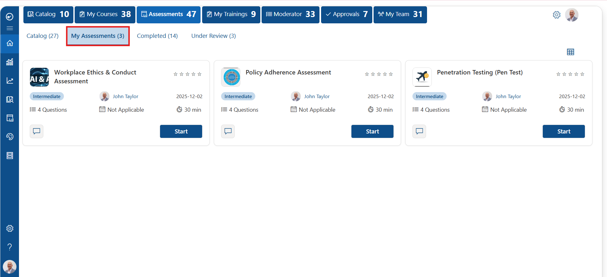
The My Assessments tab displays assessments that the user has enrolled in and can attempt.
Users can access their assigned assessments and start the evaluation directly from this section.
The assessment cards display:
By selecting Start, users can begin the assessment.
In this example, the My Assessments section shows 3 available assessments:
Each assessment provides a Start option for the user to begin the attempt.
3. Completed Assessments
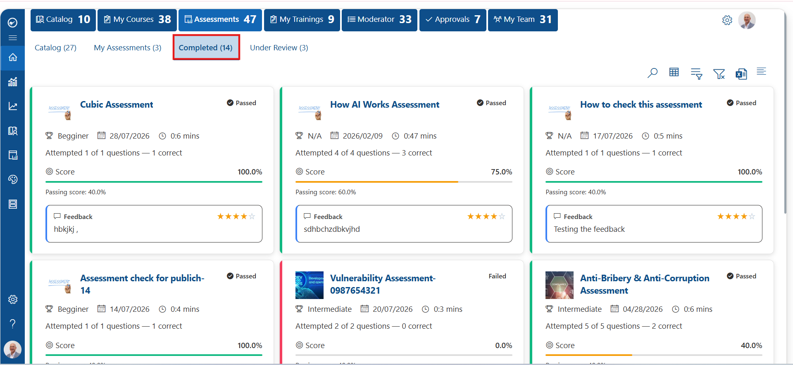
The Completed tab displays assessments that the user has already attempted.
Users can review their assessment performance, scores, and feedback provided after completion.
The completed assessment cards display:
In this example, completed assessments show different results, including passed and failed attempts. Users can review their performance details and feedback for each completed assessment.
Summary
The Assessments section in LMS 365 provides a complete assessment lifecycle experience. Users can discover assessments from Catalog, attempt assigned assessments from My Assessments, and track their results from Completed Assessments.
My Training:
The My Trainings section in LMS 365 allows users to view their scheduled, ongoing, and completed training activities. Users can access training details, start available trainings, continue ongoing sessions, and review completed trainings.
1. Upcoming Trainings
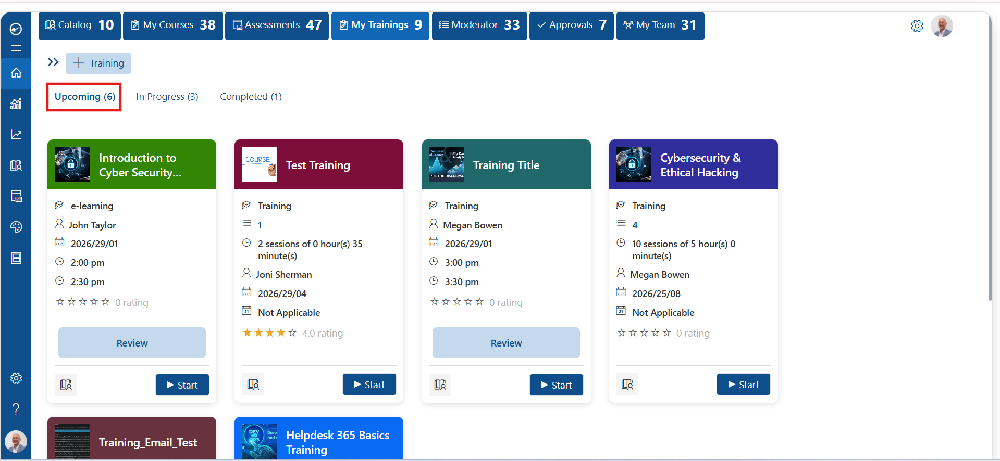
The Upcoming tab displays all training sessions that are assigned or available for the user but have not yet been completed.
Users can review upcoming training details before starting the session.
The training cards display information such as:
Users can select the Start button to begin the available training. Some trainings may also display a Review option before starting.
In this example, the Upcoming section shows 6 available trainings including Introduction to Cyber Security, Test Training, Training Title, and Cybersecurity & Ethical Hacking.
2. In Progress Trainings
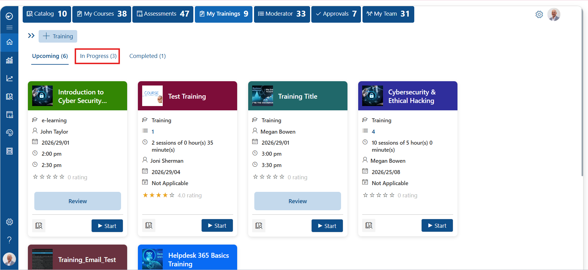
The In Progress tab displays trainings that the user has started but has not yet completed.
Users can continue working on ongoing training sessions from this section.
The training cards display:
In this example, the In Progress section shows 3 ongoing trainings. Users can access the available training sessions and continue their learning activities.
3. Completed Trainings
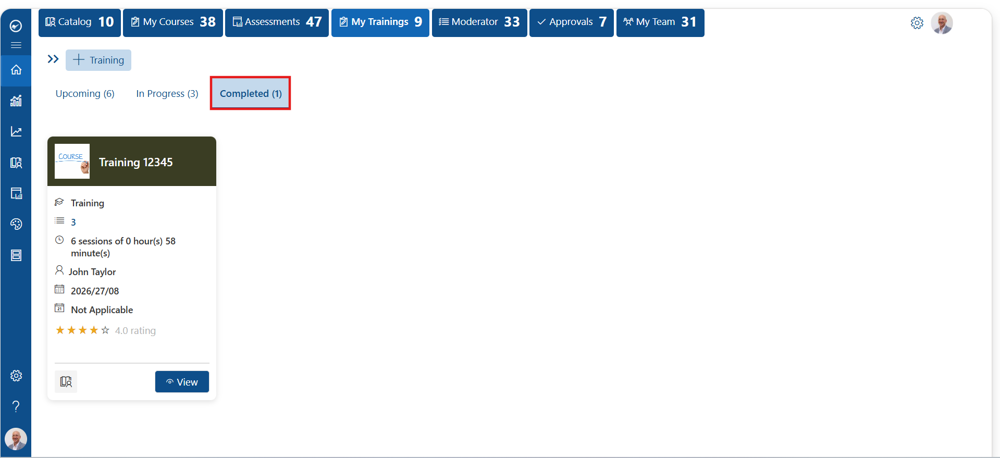
The Completed tab displays all trainings that the user has successfully completed.
Users can review completed training information and access details of previously completed sessions.
The completed training card displays:
The View button allows users to open and review completed training details.
In this example, the Completed section shows 1 completed training named Training 12345.
Moderator:
The Moderator section in LMS 365 allows moderators to review and manage assessments submitted by users. Assessments created with input type questions or file upload responses are first available under Not Started and move to Completed after the moderator reviews and submits the assessment.
1. Not Started Assessments
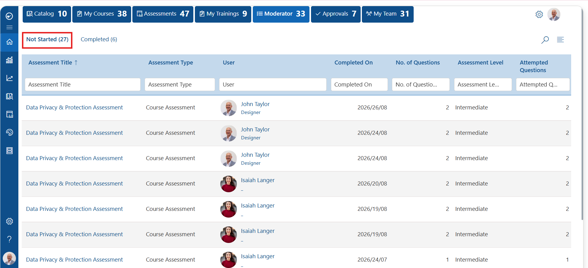
The Not Started tab displays assessments that require moderator review.
When an assessment is created using input type questions or file upload responses, " "and a user completes the assessment, the submission appears in this section for the moderator.
The Not Started assessment list displays details such as:
The moderator can select the assessment from this list, review the submitted responses, " "and complete the moderation process.
In this example, the Not Started tab shows 27 assessments waiting for moderator review.
2. Completed Assessments
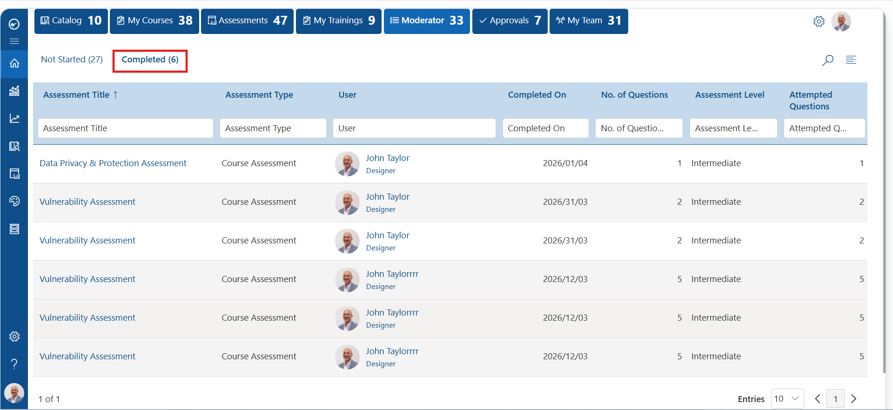
The Completed tab displays assessments that have been reviewed and submitted by the moderator.
After the moderator checks the assessment submission from the Not Started section and completes " "the review process, the assessment moves to Completed.
The completed assessment list displays:
In this example, the Completed tab shows 6 assessments that have completed the moderation process.
Approvals:
The Approval Workflow feature in LMS 365 allows organizations to create approval processes for both courses and assessments. When a user selects the Enroll button for a course or assessment that requires approval, an approval request is automatically sent to the configured approvers. Once the request is approved, the user gets access to the respective course or assessment.
1. Requests
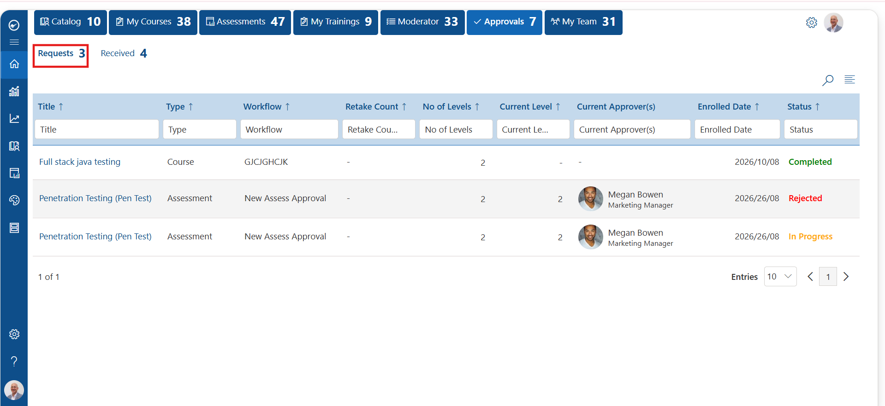
The Requests tab displays the approval workflows created by the logged-in user.
Users can view the approval requests they have initiated and track their current status.
The Requests section displays information such as:
This section helps users monitor the progress of approval requests created by them.
2. Received
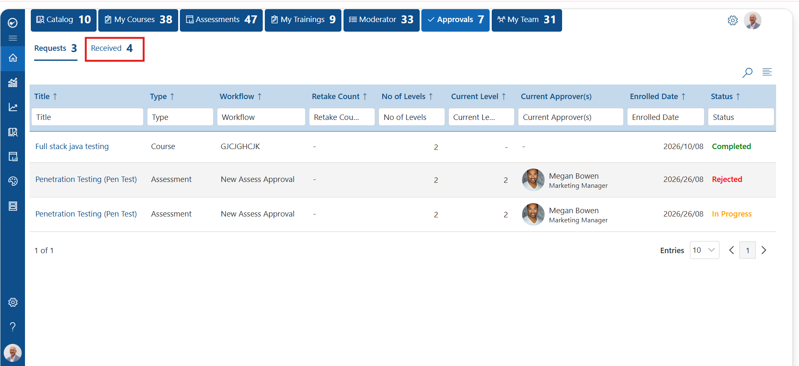
The Received tab displays approval requests assigned to the logged-in user for review and approval.
When another user enrolls in a course or assessment that requires approval, the request is sent to the configured approvers and appears in this section.
Approvers can review the request details and take the required action.
The Received section displays information such as:
Once the approver approves the request, the user receives access to the requested course or assessment.
My Team:
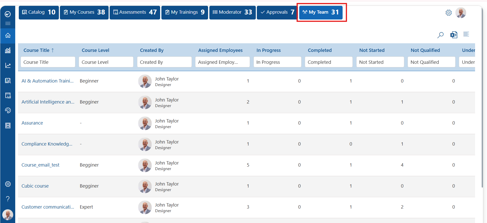
The My Team section in LMS 365 allows users to view and track the learning progress of courses created by them. It provides visibility into how users are progressing with the courses assigned from their created courses.
Users can monitor course-related details such as:
This section helps course creators understand learner engagement and track completion progress across their courses.
Users can also export the displayed course progress details to an Excel file for further analysis and reporting.